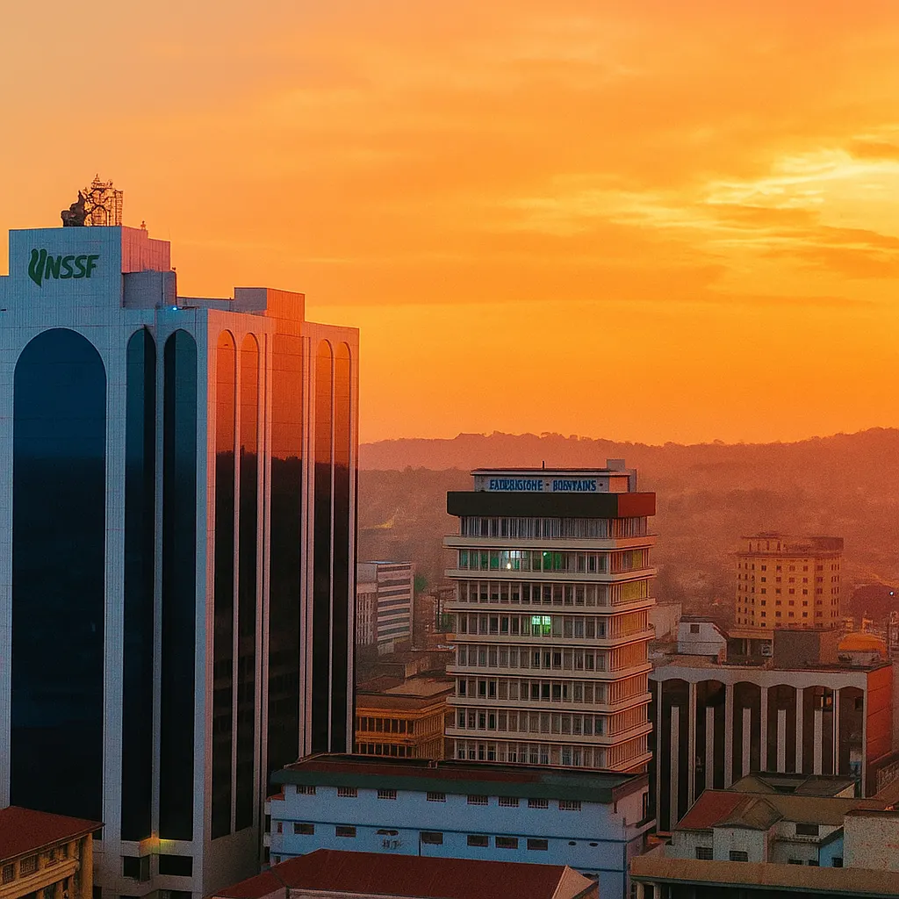

Clean Water Systems — Nyando
Community-led water purification and safe storage program reaching over 4,000 residents.
Explore our current work and the communities we serve.

Community-led water purification and safe storage program reaching over 4,000 residents.

Providing classroom supplies, teacher coaching, and learning tools for rural schools.

Training community health workers on safe sanitation and hygiene practices.
Access to clean water and health education transforms lives. Our projects reduce illness, improve school attendance, and create durable benefits that last for generations.